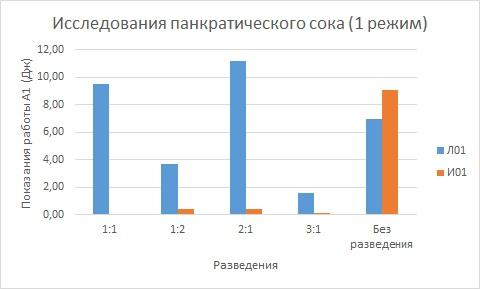

Сравнение показаний работы при разных разведениях
| Внутрипротоковые кисты | |||||
|---|---|---|---|---|---|
| Пациент | 1:1 | 1:2 | 2:1 | 3:1 | Без разведения |
| И01 | 0,26 | 0,26 | 0,08 | 6,07 | |
| И02 | 0,88 | 5,43 | 17,40 | 16,03 | |
| И03 | 9,8 | 8,97 | 7,56 | 4,54 | 5,90 |
| И04 | 8,66 | 3,85 | 6,41 | 9,08 | 9,24 |
| И05 | 7,6 | 0,22 | 4,19 | 6,05 | |
| Внепротоковые кисты | |||||
|---|---|---|---|---|---|
| Пациент | 1:1 | 1:2 | 2:1 | 3:1 | Без разведения |
| Л01 | 6,32 | 2,47 | 7,47 | 1,07 | 4,68 |
| Л02 | 1,90 | 1,17 | 2,40 | 2,96 | 3,56 |
| Л03 | 2,45 | 1,88 | 21,55 | 0,83 | |
| Л04 | 6,63 | 2,06 | 2,43 | 3,44 | 2,74 |
| Л05 | 4,72 | 0,98 | 0,51 | 1,53 | 2,17 |
